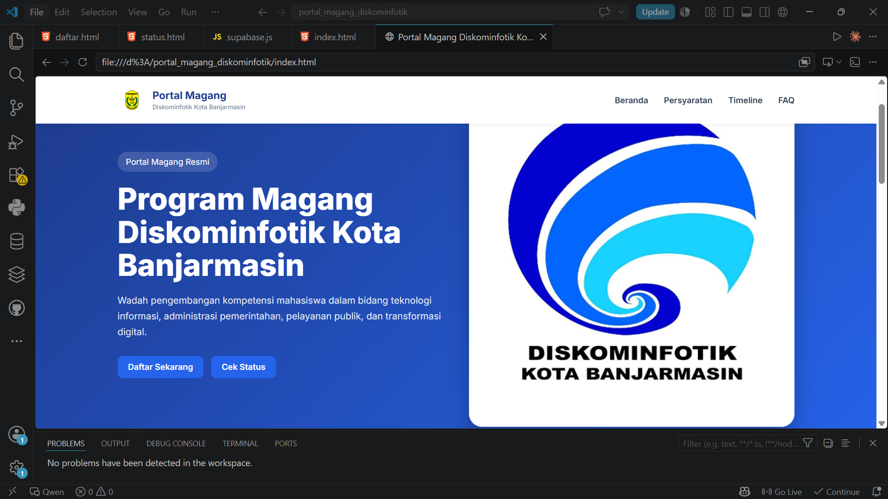

Web Portal untuk Calon peserta magang yang ingin mencalonkan diri, melihat informasi, dan mendaftar magang dengan mudah tanpa harus datang langsung kekantor.

Web portal digital adalah web informasi dan pendaftaran magang yang dibuat menggunakan HTML, CSS, dan JavaScript.
web ini dilengkapi dengan nomor pendaftaran unik yang dapat digunakan untuk memantau status pendaftaran magang secara real-time, memberikan kemudahan bagi calon peserta magang untuk melacak proses pendaftaran mereka tanpa harus datang langsung ke kantor. Dengan fitur ini, calon peserta magang dapat dengan mudah mengetahui apakah pendaftaran mereka masih dalam status pending, sudah diterima, atau ditolak, sehingga meningkatkan transparansi dan efisiensi dalam proses pendaftaran magang
Calon peserta magang dapat mendaftar secara online.
Dapat melihat jumlah peserta magang yang tersedia.
Dapat melihat status pendaftaran Pending, Diterima, atau Ditolak